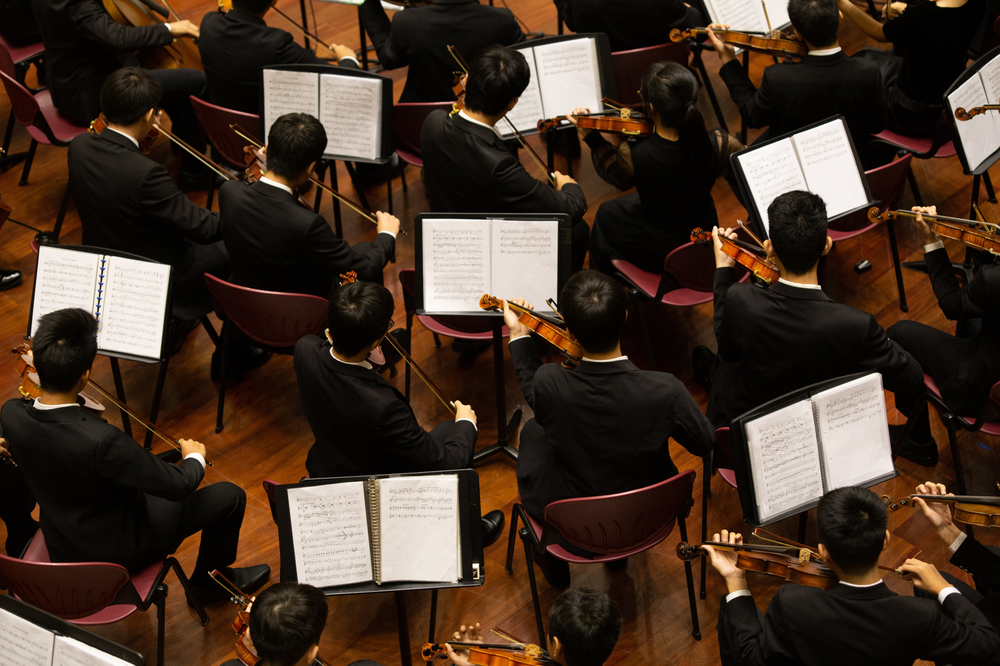

We Five is a music institution which specializes on classical music(orchestra) led by Principal Conductor Samantha
We are based in Nigeria at 132 GRA,Enugu State, and usually performing across the world, we actively conduct our tutorial both physical and digital classes.
We Five creates thrilling performances for a global audience. Through its network of residencies, the We Five has a national footprint, serving communities across Nigeria both in performance and through its extensive outreach and engagement programme.
At the heart of the Orchestra’s residencies is an outreach and engagement programme that empowers people in every community to engage with, and participate in, orchestral music.
The We Five’s flagship Orchestra Unwrapped project for schools encompasses concerts, in-school workshops and teacher training, delivered in partnership with Music Hubs; intergenerational creative music-making community project Hear and Now brings together people living with dementia and their carers with young musicians; and urban-classical project Symphonize engages vulnerable teenagers.